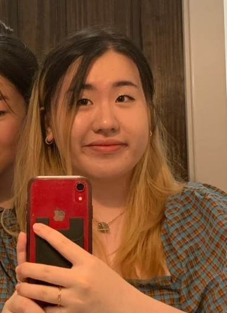

O.Pal
Reducing Patient Anxiety One Tap At A Time

Section AC: Mi Chung, Grace Yang, Ryan Nguyen, Tiffany Tran
Mi Chung  Grace Yang Ryan Nguyen Tiffany Tran
Problem and Design Overview:
An experience that does not get much attention is anxiety surrounding doctor’s appointments. We wanted to create an idea that would have a meaningful impact while creating something that was unique to the space. According to an article published by PR Newswire, they stated:
That nearly half (48%) of Amercians report feeling anxious before a doctor’s appointment (PR Newswire)
Despite the high percentage, it is a topic that does not get talked about enough. So, we wanted to tackle this topic. Since this is an experience that so many people can face, we thought that this would be a relevant topic. With apps and websites being done before, we wanted to make something that was unique to the space, which was a companion robot. It would allow us to explore the design space in unique ways that are typical. The robot will allow us to combine software and hardware ideas to make it a more unique experience for our users.
Design Research Process and Key Insights:
We faced some challenges in choosing a project topic that truly resonated with us. After settling on the theme of healthcare, we decided to focus on patients with anxiety, an audience we connected to. Tiffany, one of our team members, works at an optometry clinic, providing us with the opportunity to engage with participants from her clinic. We wanted to understand more about what factors may cause anxiety regarding the appointment and see if there are common patterns seen among different patients. We decided on conducting interviews to allow a safe space for interviewees to share their stories about their experience at the optometrist. We then started by interviewing an experienced optometrist to develop relevant questions for our patient interviews and to gain insights into specific problems in eye care and potential design solutions. Through interviews with patients from diverse backgrounds, we identified a common theme: the need for better education and trust. From this insight, we established our project goal: to enhance patients' understanding of their appointment details and foster trust with their physicians. Our focus narrowed to creating tasks that educate patients about their appointments. Ultimately, we designed a smart companion robot to help bridge the communication gap between patients and doctors, ensuring both parties understand each other better and supporting patients throughout their appointments.
3 Key Insights
Education is important in easing patient’s anxiety because they are better informed.
We learned from our research participants that they experience more anxiety during their first appointment due to how unfamiliar they were with the procedures and tools at the optometrist. Learning about various terms and how procedures were performed helped ease their anxiety because they knew what to expect going in and having prior experience made the appointment less intimidating. This was a key concept that we wanted to include in our design because education is extremely important especially for newer patients. It makes the experience less stressful and nerve-racking due to having the knowledge of the procedures. It also makes hearing various terminology easier because it doesn’t sound as harsh and intimidating. With having our design be a robot, it creates a better connection for the patient. Rather than just learning about concepts through a phone or computer screen, but having a physical robot be with the patient during their appointment, it builds a bridge between the doctor and patient to support both sides.

Anxiousness can stem from patients telling doctors about their personal information and hearing bad news.
Participant P2 informed us that they experienced anxiety when it came to informing their doctor about their experiences since they needed to establish a trust between them. It was difficult to talk about their personal experiences without feeling uncomfortable. While hearing their results also gave them anxiety because bad news wasn’t something they liked hearing when it came to their eye health. Taking these concerns, we wanted to bridge a gap between the patient and doctor. By providing the user with a “Notes” application, it allows the user to express their concerns in a safe way where they won’t feel judged. Which will also allow the doctors to read over the notes to provide a better experience for the patient should they are better informed of the patient’s experiences.

The first appointment is important in setting the feelings around optometry appointments.
We learned from our research participants that the first appointment is very important in setting the precedent for future appointments. If the patients’ anxiety is not sufficiently eased or if it is heightened during the appointment, it is very common for patients to always instinctively remember this negative experience and have a negative feeling against going to the optometry appointment. We decided to design around this concern by allowing patients to be more comfortable with a companion. It is very common for patients to be able to ease their nervousness when someone is with them, which can improve the experiences for many patients at their first appointment. We will allow patients to calm down with breathing exercises if they feel too overwhelmed as the robot will help guide them or even have games if they want to be able to take their minds off of the appointment.

Iterative Design Process and Key Insights:
For our design focus, we wanted to think about what would be features of the robot that patients will find the most useful. O.Pal went through many iterations of design when we took the feedback that we got. We decided to create a paper prototype of the entire robot with both hardware and software features for users to be able to interact with. Having a physical prototype made it easier for our participants to interact with, and there were many key insights that we obtained as a result. Additionally, the usability testing allowed us to see what people outside our group would do that we didn’t initially consider during our design process. These ideas were crucial in developing our new design.
3 Key Insights
Simplifying the user interface.
A common feedback that we got from our usability tests was how our UI felt a bit all over the place. During a usability test done with P5, they asked, “Why is there both a home button and return button?” This brought up a great point about how our design did have unnecessary aspects that could have been taken out. There wasn’t a need for both buttons because it complicates the interaction.

Adding in more companion-like features.
Another crucial feedback that we received from our usability tests focused on the companionship of O.Pal. Our participant brought up how we could make the robot “more welcoming and anxiety-reducing” (P6). This brought up an important question of what our current prototype had to make it feel like a companion. This comment helped our group refocus on our ideas of what our robot would do since the main functionality so far has been more of an assistant rather than companion. In order to help with this, we added in more interactive elements to make it seem as though you are talking to a friend and games to help with wait time.

Accessing certain features outside of the screen.
Across all our participants, they all pointed out how there was a lack of easy-to-access buttons on our robot. We originally only had the speaking functionality on the robot, but buttons such as volume control and unmute were not present on the robot physically. This was a big issue due to how some participants would like to be able to mute the robot when they interact with it. Since there could be confidential information that should be kept silent/private.

Initial designs
The robot face.

The home screen with applications.

Overview of appointment with doctor name and procedures.

After the appointment, the user can choose how they would like to receive their appointment information.

Resulting Design:
Our updated robot design
With our new design, we added in a bigger keyboard as well as having more buttons on the side to make the user experience easier. Additionally, we included braille since it can help users that experience a higher severity in their eye conditions. We also added text under each button to make the functionality clearer.
Scenario 1: Patient interacting with the robot to get more information before their appointment

Going into an appointment can be scary when you are unsure of what to expect. O.Pal will give the patient a detailed overview of the appointment. This ensures that the patient feels at ease going in because they will be aware of the procedures and even opt-out of procedures they don’t feel comfortable with. It provides the patient with a safe space to present their thoughts with the doctor if they feel uncomfortable doing so.

After the Welcome Screen, O.Pal will ask the patient how they are feeling and will prompt them with respective exercises depending on their mood.
There is a new layout for the application screen, it contains an order that would make sense in the patient’s appointment. We wanted them to be able to access their “Appointment Preview” first which helps with the user flow.

The note application also got a bit of a new look. Since it is an important part of O.Pal, we made the design a bit more appealing while still keeping the simplicity of the feature.
Scenario 2: Patient becoming more aware about the details of their appointment

O.Pal will act as a bridge between the patient and the doctor. Presenting diagnoses and terminology that might be difficult to understand. O.Pal will guide the patient throughout their doctor’s appointment, performing tasks such as having notes readily available, defining terms, breathing exercises to calm the patient, etc. O.Pal will also help the patient schedule their next appointment to avoid the hassle of having to wait at the front desk. O.Pal will be the friend you never knew you needed at the optometrist.
The Appointment Preview screen.
User can add in notes and once they do, it will look like this.

After the user adds in notes, there will be a notification that pops up for the doctor and user to view during their appointment
Users are also able to look up terminology before or during their appointment to establish a better understanding of procedures, tools, treatments, etc.